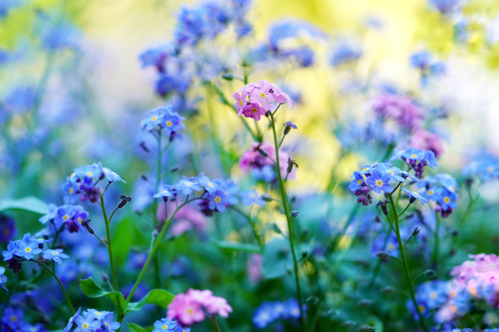

The forget-me-not is the first submitted flower we ever received, coming from a team member's cousin. As the official flower of Alaska, it's inclined towards cooler climates and is well known for its beautiful blue tones. Its other names include "scorpion grass" or its original Greek name, "mouse's ear".